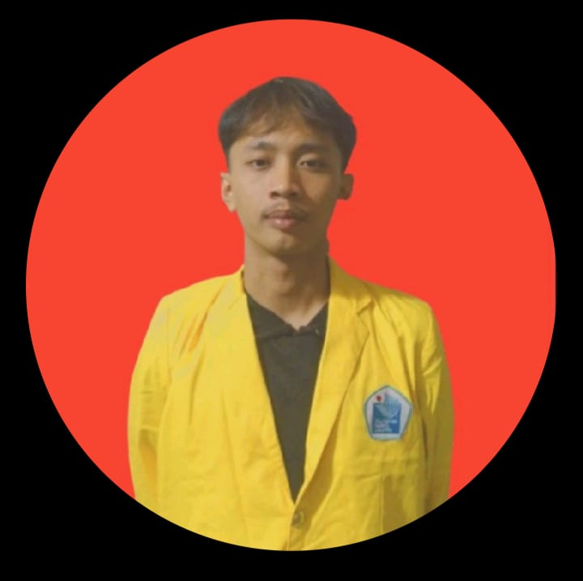

Saya adalah mahasiswa aktif Program Studi D4 Teknik Multimedia dan Jaringan di Politeknik Negeri Jakarta dengan minat besar di bidang teknologi informasi dan pengalaman dalam berbagai proyek akademik maupun non-akademik. Selama menempuh studi, saya banyak terlibat dalam pengembangan perangkat lunak, analisis data, serta implementasi sistem berbasis Internet of Things (IoT) yang menggabungkan perangkat keras dan perangkat lunak untuk menciptakan solusi nyata.
Di bidang Data Science & Machine Learning, saya terbiasa melakukan pengolahan, analisis, hingga visualisasi data, serta membangun model prediksi untuk mendukung pengambilan keputusan berbasis data. Tools yang saya gunakan meliputi Python, SQL, serta pustaka populer seperti Pandas, Scikit-learn, dan TensorFlow.
Pada ranah Web Development, saya menguasai teknologi front-end seperti HTML, CSS, JavaScript, dan framework modern, serta back-end menggunakan Node.js dengan dukungan database SQL maupun NoSQL. Selain itu, saya juga memahami UI/UX Design yang membantu menghasilkan aplikasi fungsional sekaligus user-friendly.
Di bidang IoT, saya telah mengembangkan proyek seperti Smart Greenhouse dan Smart Loker, dengan memanfaatkan ESP32, Arduino, serta berbagai sensor untuk sistem monitoring dan otomasi berbasis real-time. Pengalaman ini memperkuat pemahaman saya mengenai integrasi hardware–software dalam mendukung transformasi digital.
Selain itu, saya memiliki kemampuan dalam Cisco Networking, terbiasa berkolaborasi dengan Git & GitHub, serta mahir memanfaatkan Microsoft Office untuk mendukung dokumentasi dan pelaporan.
Dengan kombinasi akademik, keterampilan teknis, dan pengalaman proyek, saya percaya diri untuk berkontribusi di berbagai bidang, seperti Data Engineer, Data Scientist, Software Engineer, IoT Developer, maupun Network Engineer. Saya selalu terbuka dengan tantangan baru, cepat beradaptasi, dan berkomitmen untuk terus belajar serta memberikan nilai tambah di lingkungan kerja profesional.